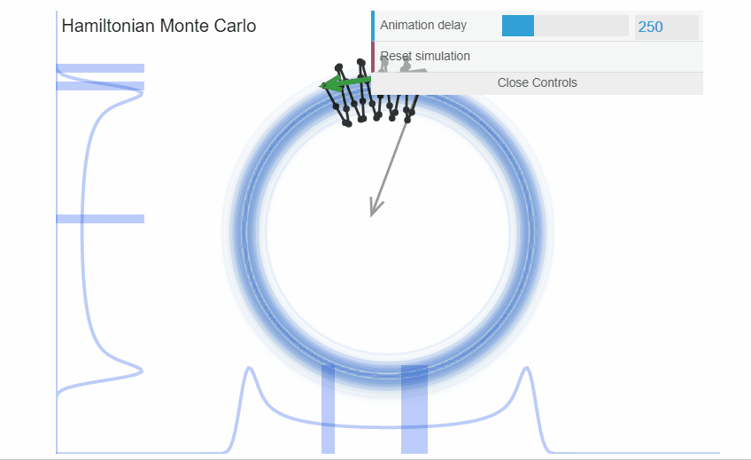
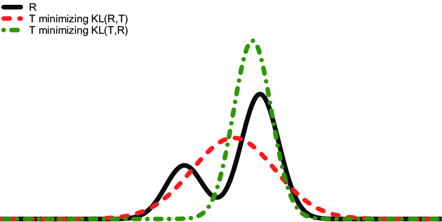
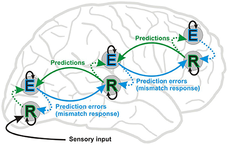
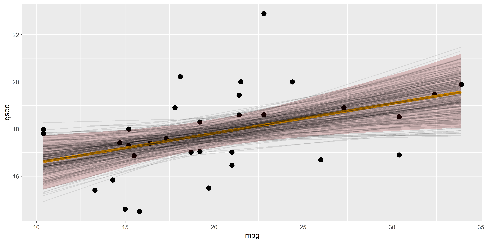

library(brms)
f <- brms::brmsformula(qsec ~ 0 + Intercept + mpg)Bayesian Statistics
9. Linear Models (Posterior)
Dominique Makowski
D.Makowski@sussex.ac.uk
D.Makowski@sussex.ac.uk
Recap
- Formula specification
- Prior specification
- Intercept
- e.g., \(\mu\) =
mean(mtcars$qsec)and \(\sigma\) =10 * sd(mtcars$qsec)
- e.g., \(\mu\) =
- Slope
- e.g., \(\mu\) = 0 and \(\sigma\) = 5
priors <- c(
brms::set_prior("normal(17.85, 17.9)", class = "b", coef = "Intercept"),
brms::set_prior("normal(0, 5)", class = "b", coef = "mpg")
) |>
brms::validate_prior(f, data=mtcars)
priors prior class coef group resp dpar nlpar lb ub source
(flat) b default
normal(17.85, 17.9) b Intercept user
normal(0, 5) b mpg user
student_t(3, 0, 2.5) sigma 0 default- Prior Predictive Checks
- Predicted response density and relationships based on the priors only
Fitting the model
- Pass the formula, the data, and the priors (optional) to
brms::brm()(“Bayesian Regression Model”)
- Options pertaining to the sampling algorithm can be specified1
MCMC - NUTS
- By default,
brmsuses MCMC- In particular, the No-U-Turn Sampler (NUTS) algorithm, which is a self-adjusting variant of Hamiltonian Monte Carlo (HMC)
- The key idea behind HMC is that it treats sampling as a physics problem, where we imagine the posterior distribution space as a hilly landscape and use momentum to explore it efficiently
- Instead of setting a fixed number of steps, NUTS keeps “rolling the ball” until it detects a U-turn (where the trajectory starts going back toward its starting point)

MCMC vs. Variational Inference (VI)
- Stan (the language used by
brmsin the background) also implements variational inference algorithms that sample from an approximation of the posterior, which are faster but less accurate- You can use them by specifying:
brm(..., algorithm = "meanfield")(or"fullrank"or"pathfinder") - Unlike MCMC, which samples from the true posterior, Variational Inference (VI) approximates it using simpler distribution (e.g., Gaussian) and minimizes the difference between the two (e.g., optimizing the Kullback-Leibler KL divergence)
- You can use them by specifying:
- Pros:
- Can be useful for “quick” checks and adjustments but should not necessarily be used for final results
- If the uncertainty estimation is not the main goal but speed is
- Cons:
- Less accurate
- Fragile (algorithm can easily fail)
- VI posteriors may be overconfident (narrower CI)

Variational Inference (VI) in the Brain
- The brain is thought to be a Bayesian inference machine (Friston et al.), constantly predicting sensory input and updating beliefs based on errors
- Prediction errors (mismatch between expectation and reality) drive learning, perception, and action
- Computing exact posteriors would be too computationally expensive for the brain
- Instead, it might approximates the posterior in a way similar to VI:
- The brain represents beliefs with simpler distributions (e.g., Gaussian-like approximations).
- Instead of exploring all possibilities, it minimizes a function (“Free Energy”) to find the best fit
- The brain minimizes Free Energy to improve its model could be mathematically identical to VI minimizing the Kullback-Leibler (KL) divergence between an approximate posterior and the true posterior[^In fact, Friston’s “Variational Free Energy” is mathematically equivalent to what computer scientists call the Evidence Lower Bound (ELBO) in machine learning.]
- Cognitive and neural processing could be optimized for efficiency rather than exactness, much like how VI trades accuracy for speed

MCMC parameters
- For this module we will focus on MCMC, which is slowest but the “true” Bayesian solution
- MCMC can be tuned
- Number of chains, number of iterations
- Warm-up: the number of initial samples that are discarded (burn-in phase)
- Thinning: the number of samples that are kept (every n-th sample)
- Adaptation: the algorithm can adapt its parameters during the burn-in phase
- …
- In most cases, the default values are fine
- It’s only when there are problems that you should start considering tweaking these parameters
Sampling Diagnostics - Trace Plots
- HAIRY CATERPILLARS
- The MCMC algorithm is supposed to draw independent samples from the posterior
- There should be no autocorrelation between successive samples (i.e., no patterns in the trace plot)
- They should look like hairy caterpillars
- We typically draw multiple independent chains (useful for parallel computing, e.g., one chain per core)
- The plots shows 1) the posterior distribution of the parameters and 2) the trace plot of the MCMC algorithm
- One trace per chain: there should not be any pattern
Sampling Diagnostics - Effective Sample Size (ESS)
Family: gaussian
Links: mu = identity
Formula: qsec ~ 0 + Intercept + mpg
Data: mtcars (Number of observations: 32)
Draws: 4 chains, each with iter = 1000; warmup = 500; thin = 1;
total post-warmup draws = 2000
Regression Coefficients:
Estimate Est.Error l-95% CI u-95% CI Rhat Bulk_ESS Tail_ESS
Intercept 15.31 1.06 13.08 17.40 1.01 723 718
mpg 0.13 0.05 0.02 0.24 1.01 722 663
Further Distributional Parameters:
Estimate Est.Error l-95% CI u-95% CI Rhat Bulk_ESS Tail_ESS
sigma 1.70 0.23 1.33 2.23 1.00 697 779
Draws were sampled using sampling(NUTS). For each parameter, Bulk_ESS
and Tail_ESS are effective sample size measures, and Rhat is the potential
scale reduction factor on split chains (at convergence, Rhat = 1).- The effective sample size (ESS) is an estimation of the number of independent samples that we have
- ESS (“Bulk” ESS) is a measure of how well the centre of the posterior distribution is described
- Can be see as an index of the accuracy of the indices of centrality
- “Tail” ESS is a measure of how well the tails of the distribution are described
- Can be see as an index of the accuracy of the indices based on range
- ESS should be at least 400 (for Bulk), but better if at least 1000 (see
effectsize::interpret_ess())
Sampling Diagnostics - \(\hat{R}\)
- The \(\hat{R}\) (“R-hat”) is a measure of convergence
- It compares the variance within chains to the variance between chains
- If the chains have not converged to a common distribution, the \(\hat{R}\) statistic will be greater than one
- Should be lower than 1.01 (see
effectsize::interpret_rhat())
Posterior Description
# Fixed Effects
Parameter | Median | 95% CI | pd | Rhat | ESS
------------------------------------------------------------
(Intercept) | 15.31 | [13.08, 17.40] | 100% | 1.008 | 700
mpg | 0.13 | [ 0.02, 0.24] | 99.60% | 1.007 | 689
# sigma Parameters
Parameter | Median | 95% CI | pd | Rhat | ESS
------------------------------------------------------
sigma | 1.68 | [1.33, 2.23] | 100% | 1.005 | 670- Indices of centrality, uncertainty, existence, significance
- Note that ESS computed by
parameters(a “general” ESS) is currently different from the one computed bybrms, but it doesn’t matter which one you use, they are all estimates anyways and should be relatively close. - Customize the parameters shown
# Fixed Effects
Parameter | Mean | SD | 89% CI | pd | Rhat | ESS
------------------------------------------------------------------
(Intercept) | 15.31 | 1.06 | [13.64, 16.99] | 100% | 1.008 | 700
mpg | 0.13 | 0.05 | [ 0.04, 0.20] | 99.60% | 1.007 | 689
# sigma Parameters
Parameter | Mean | SD | 89% CI | pd | Rhat | ESS
-----------------------------------------------------------
sigma | 1.70 | 0.23 | [1.37, 2.10] | 100% | 1.005 | 670Effect Significance
# Fixed Effects
Parameter | Median | 95% CI | pd | Rhat | ESS
------------------------------------------------------------
(Intercept) | 15.31 | [13.08, 17.40] | 100% | 1.008 | 700
mpg | 0.13 | [ 0.02, 0.24] | 99.60% | 1.007 | 689
# sigma Parameters
Parameter | Median | 95% CI | pd | Rhat | ESS
------------------------------------------------------
sigma | 1.68 | [1.33, 2.23] | 100% | 1.005 | 670- Easiest is to use pd or decision threshold based on CI overlapping 0 (similar to Frequentist NHST)
- ROPE? But what ROPE bounds to use?
- Not straightforward to define
- Easier to use when data is standardized (and parameters are expressed in terms of SD)
- Or when you have clear hypotheses on the effect size
- BF?
- Complicated to compute for model parameters
Model Performance - R2
- Once that sampling quality has been assessed, and that the posteriors have been described, we can assess the model’s performance
- How well does the model fit/predict the data?
- R-squared, the percentage of variance explained by the model (for linear models), can be computed
- With Bayesian statistics - where every parameter is probabilistic, we also get a posterior distribution of the R-squared, and can thus compute credible intervals
- Note that R-squared is straightforward to interpret for linear model but gets tricky for GLMs (because there is no “variance” of the outcome in the same sense). We cannot say “the model explains X% of the variance” baed on the R2 for GLMs.
Model Performance - Relative Indices
- Other “relative” indices of fit exist to compare models between them (we will see that next week)
Posterior Predictive Check
- Posterior predictive checks is a way to assess the model by comparing the observed data to the predicted data
- The
estimate_*functions from themodelbasedpackage allow us to generate predictions, either for every observation of the dataset, or for a new datasset (e.g., equally spread predictor values to use to plot the regression line)
mpg | Predicted | SE | CI | iter_1 | iter_2 | iter_3
--------------------------------------------------------------------
21.00 | 17.95 | 1.75 | [14.42, 21.34] | 17.27 | 16.80 | 16.00
21.00 | 17.91 | 1.74 | [14.60, 21.23] | 21.26 | 16.30 | 17.54
22.80 | 18.24 | 1.75 | [14.64, 21.71] | 16.94 | 15.70 | 17.14
21.40 | 17.97 | 1.73 | [14.53, 21.28] | 18.21 | 17.70 | 21.82
18.70 | 17.67 | 1.72 | [14.42, 21.17] | 13.77 | 14.54 | 20.94
18.10 | 17.59 | 1.72 | [14.21, 20.92] | 19.80 | 19.18 | 17.48[1] "n-rows = 32 ; n-cols = 256"- By default, the
Predictedcolumn correspond to the Median of the posterior prediction (the median of the N iterations) - The
keep_iterationsargument keeps a subset (or all ifTRUE) of individual iterations as additional columns - For plotting, useful to reshape that in a “long-format” (putting iterations in a single column instead of multiple columns)
mpg | Predicted | SE | CI | Residuals | iter_index | iter_group | iter_value
--------------------------------------------------------------------------------------------
21.00 | 17.95 | 1.75 | [14.42, 21.34] | -1.49 | 1 | 1 | 17.27
21.00 | 17.91 | 1.74 | [14.60, 21.23] | -0.89 | 2 | 1 | 21.26
22.80 | 18.24 | 1.75 | [14.64, 21.71] | 0.37 | 3 | 1 | 16.94
21.40 | 17.97 | 1.73 | [14.53, 21.28] | 1.47 | 4 | 1 | 18.21
18.70 | 17.67 | 1.72 | [14.42, 21.17] | -0.65 | 5 | 1 | 13.77
18.10 | 17.59 | 1.72 | [14.21, 20.92] | 2.63 | 6 | 1 | 19.80[1] "n-rows = 8000 ; n-cols = 9"Posterior Predictive Check - Distribution
- We can see whether the distribution of predicted values are closer to the observed values (in particular, its mean when using linear models)
- Note the use of
geom_line(stat="density")for the lines instead ofgeom_density()to be able to modify the alpha of the lines (and not the filling) - Posterior predictive checks of the distribution is particularly useful for more complex models to see if the model manages to reproduce the
Visualizing the Effects - Relationship
- We typically are interested in visualizing the effects (i.e., the impact of the predictors)
- This means predicting the outcome for different values of the predictor
mpg | Predicted | SE | CI | iter_1 | iter_2 | iter_3
--------------------------------------------------------------------
10.40 | 16.62 | 0.57 | [15.44, 17.73] | 16.60 | 16.82 | 17.01
13.01 | 16.95 | 0.46 | [15.96, 17.86] | 16.88 | 17.05 | 17.29
15.62 | 17.28 | 0.37 | [16.54, 18.00] | 17.16 | 17.29 | 17.57
18.23 | 17.60 | 0.31 | [16.98, 18.21] | 17.45 | 17.53 | 17.85
20.84 | 17.93 | 0.31 | [17.32, 18.52] | 17.73 | 17.77 | 18.13
23.46 | 18.26 | 0.36 | [17.57, 18.97] | 18.01 | 18.00 | 18.41[1] "n-rows = 10 ; n-cols = 255"- We can also
reshapethese iterations to easily plot all the individual lines
mpg | Predicted | SE | CI | iter_index | iter_group | iter_value
--------------------------------------------------------------------------------
10.40 | 16.62 | 0.57 | [15.44, 17.73] | 1 | 1 | 16.60
13.01 | 16.95 | 0.46 | [15.96, 17.86] | 2 | 1 | 16.88
15.62 | 17.28 | 0.37 | [16.54, 18.00] | 3 | 1 | 17.16
18.23 | 17.60 | 0.31 | [16.98, 18.21] | 4 | 1 | 17.45
20.84 | 17.93 | 0.31 | [17.32, 18.52] | 5 | 1 | 17.73
23.46 | 18.26 | 0.36 | [17.57, 18.97] | 6 | 1 | 18.01[1] "n-rows = 2500 ; n-cols = 8"Visualizing the Effects - Plot (1)
- Step 1: plot the raw data points
- Note that we specify the “y-aesthetic” in the
geom_point()layer and not in theggplot()layer, because other layers will different variable names for their y-axis (e.g.,Predictedfor the predicted line)
Visualizing the Effects - Plot (2)
- Step 2: add the median predicted line with the CI bounds
- Using the information from the “wide” format
Visualizing the Effects - Plot (3)
- Step 3: add the individual lines
ggplot(mtcars, aes(x=mpg)) +
geom_point(aes(y=qsec), size=3) +
geom_ribbon(data=pred_wide, aes(ymin=CI_low, ymax=CI_high), fill="darkred", alpha=0.2) +
geom_line(data=pred_wide, aes(y=Predicted), linewidth=2, color="orange") +
geom_line(data=pred_long, aes(y=iter_value, group=iter_group), alpha=0.1)
- Each line corresponds to one “plausible” regression line (given our posterior beliefs about the model parameters)
- Most of them indicate a positive relationship between
mpgandqsec
What about… Model Assumptions

- Most model assumptions that applied for Frequentist models still apply for Bayesian models (e.g., linearity, homoscedasticity, normality of residuals…)
- They are not assumptions of the estimation process, but rather assumptions of the model itself
- For instance, the assumption of Homoskedasticity directly comes from the fact that there’s a single fixed \(\sigma\) parameter for the model (which corresponds to the general uncertainty in predictions).
- The Normality of the residuals comes from the distribution that is being fit to the data (a Gaussian one, see lecture on OLS/MLE).
- However, the Bayesian framework is much more flexible and allows to easily relax some of these assumptions by using different families of models.
What to Report
Example of Phrasing
“We fitted a Bayesian linear model (estimated using MCMC sampling with 4 chains of 2000 iterations) to predict qsec with mpg.”
Example of Phrasing
“Mildly informative priors were set for the intercept, \(Normal(M_{qsec}, 10*SD_{qsec})\), and the prior for the effect of mpg was set to \(Normal(0, 5)\).”
Example of Phrasing
Convergence and stability of the Bayesian sampling has been assessed by inspecting the trace plot, as well as with diagnostic indices like the R-hat, which should be below 1.01 (Vehtari et al., 2019), and Effective Sample Size (ESS), which should be greater than 1000 (Burkner, 2017).
The model converged and all parameters had satisfactory ESS and R-hat values.
Example of Phrasing
The model’s explanatory power is substantial (R2 = 0.75, 95% CI [0.65, 0.80]).
Example of Phrasing
We will report the median of the posterior distribution as the point estimate of the parameters, along with the 95% Highest Density Intervals (HDI) as credible intervals (CI) for uncertainty. The probability of the parameter being positive (pd) will be used as an index of existence, with a threshold of 97.5% for “significance” (Makowski et al., 2019). ROPE?
Within this model:
The Intercept (Median = 15.34, 95% CI [13.07, 17.53.12]) has a 100% probability of being positive. [Interpretation]
The effect of mpg (Median = 0.13, 95% CI [0.02, 0.23]) has a 98.55% probability of being positive. [Interpretation]
Exercice
- Is there a link between raises (whether a company makes wage raises based on performance) predicted by critical (whether a company is judged “too critical” towards its employee) (
attitudebuiltin dataset)?- Make 1 model with default priors
- Another with strong priors that the effect is 0 (a prior on the slope of
Normal(0, 0.1))
The End (for now)
Thank you!